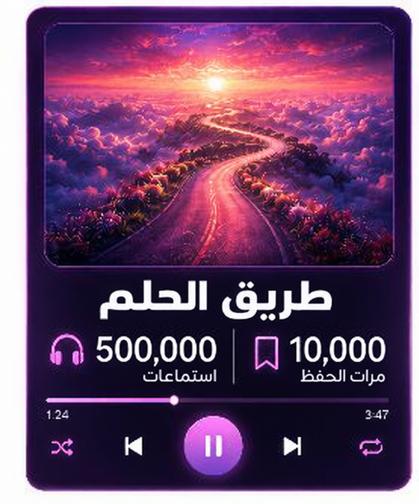
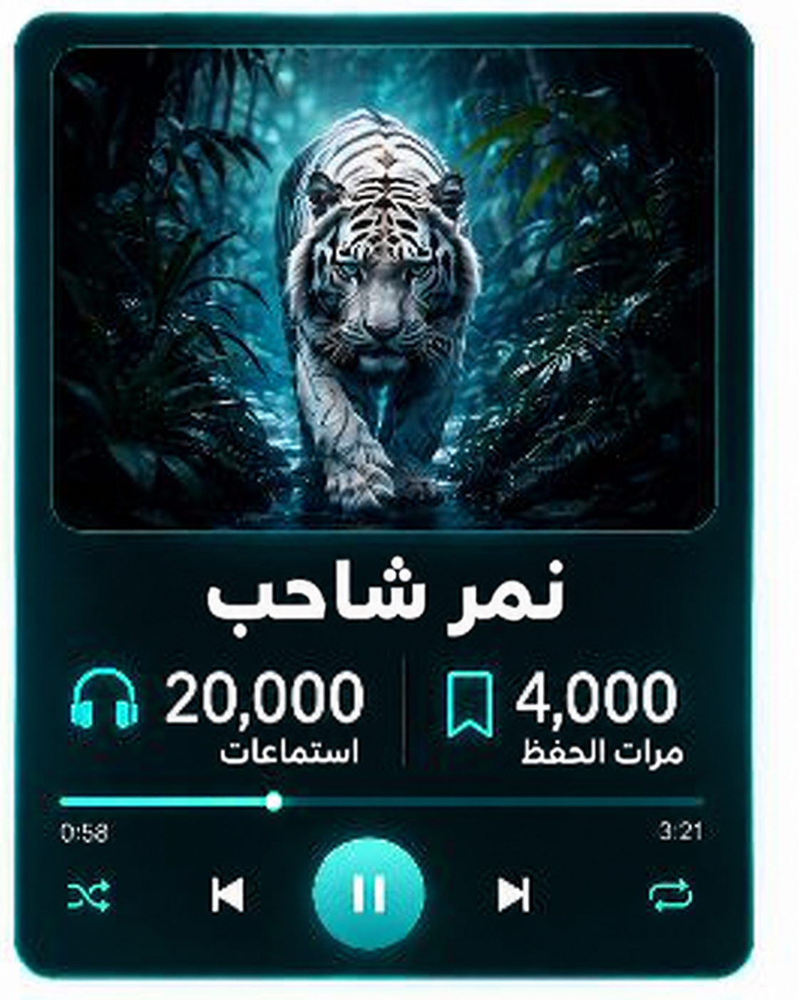
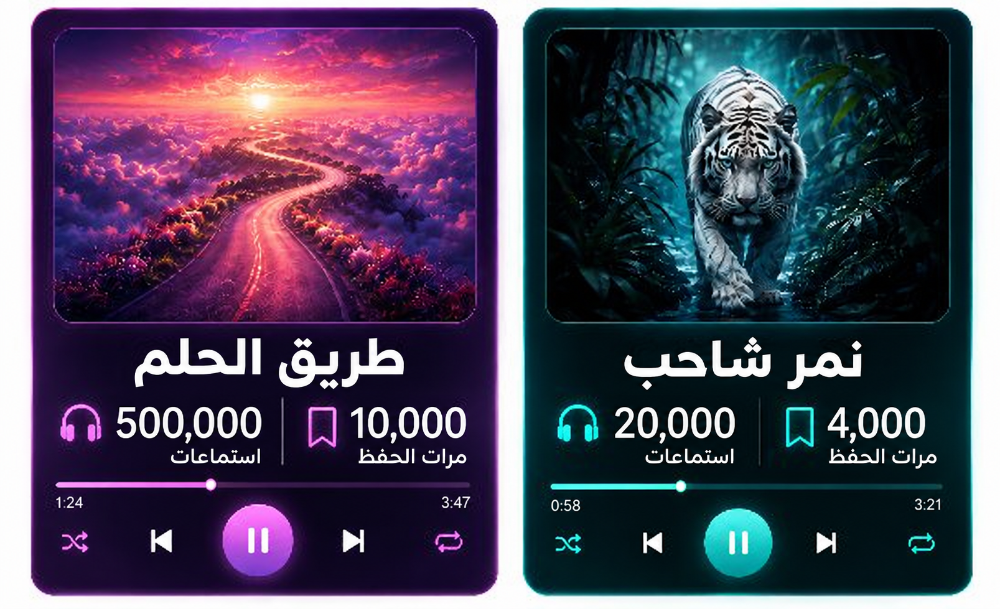
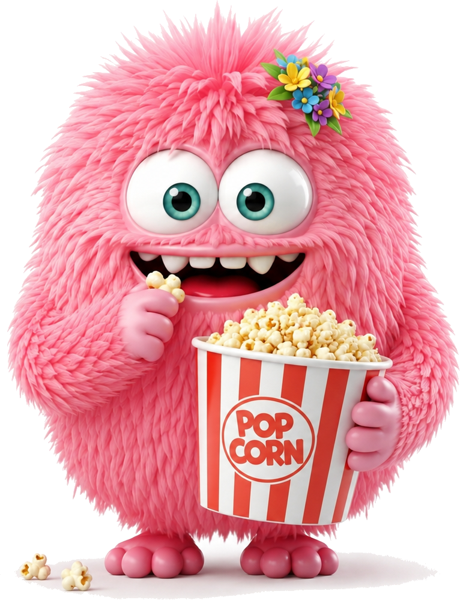

قائمة التشغيل «أغاني السنة» ستُنشر بعد دقائق قليلة.
بقي مكان شاغر واحد فقط، والأغنيتان اللتان أمامكم مرشحتان للدخول إليه.
دون أن تستمعوا إلى الأغنيتين، اضغطوا على الأغنية التي كنتم ستختارون إضافتها إلى قائمة التشغيل:


الأغنية التي تم اختيارها لقائمة التشغيل "أغاني العام" هي...
للوهلة الأولى يبدو أن «طريق الحلم» أكثر إثارة للإعجاب،
فلديه مرات استماع أكثر ومرات حفظ أكثر أيضًا.
ومع ذلك، اختار محرّرو قائمة التشغيل «النمر الشاحب» بالذات. 🤔
ماذا حدث هنا؟
سنكتشف ذلك لاحقًا في هذه الوحدة...

اختاروا كيف ترغبون في التعلم:

للوهلة الأولى يبدو أن «طريق الحلم» أنجح، فعدد مرات الاستماع إليه أكبر بكثير، وعدد مرات حفظه أكبر بكثير أيضًا.
لكن مهلًا...
لأغنية «طريق الحلم» 10,000 حفظ، ولأغنية «النمر الشاحب» 4,000 حفظ فقط — أي أن «طريق الحلم» أنجح، أليس كذلك؟
ليس بالضرورة!
استمع إلى أغنية «طريق الحلم» 500,000 شخص، بينما استمع إلى «النمر الشاحب» 20,000 فقط — وهذا عدد أقل بكثير.
لذلك لا يمكن الاكتفاء بعدد مرات الحفظ وحده.
لإجراء مقارنة عادلة، علينا أن نفحص كم من المستمعين اختاروا حفظ الأغنية.
كيف سنفعل ذلك؟
لنجعل جميع المستمعين 100%،
ثم نحسب نسبة عمليات الحفظ من مجموع مرات الاستماع.
لأغنية «النمر الشاحب» 20,000 استماع، ومنها 4,000 عملية حفظ.
لنجعل جميع المستمعين 100%، وسنكتشف أن 20% من المستمعين اختاروا حفظ الأغنية.
لأغنية «طريق الحلم» 500,000 استماع، ومن بينها 10,000 عملية حفظ.
لنجعل جميع المستمعين 100%، وسنكتشف أن 2% فقط من المستمعين اختاروا حفظ الأغنية.
رغم أن «طريق الحلم» لديه عمليات حفظ أكثر،
فإن لدى «النمر الشاحب» نسبة حفظ أعلى بكثير.
عند المقارنة بين مجموعات بأحجام مختلفة، قد تضلّلنا الأعداد وحدها.
وهذا صحيح عند المقارنة بين الأغاني، وكذلك في مقارنات أخرى:
تتيح لنا النسبة المئوية أن نجعل "الكل" عند الجميع يساوي 100،
وعندها نستطيع أن نحدد من نجح فعلًا أكثر، ومن وفّر أكثر، أو ما هو الأجدى.
اضغطوا على الفيديو للمشاهدة:
قبل ذلك مباشرة، تعالوا نحل تمرينًا واحدًا معًا.
لنتأكد من أننا فهمنا الفكرة،
ولنلعب لعبة المقارنات!
سؤال خفيف للإحماء قبل أن نتقدّم.